A fan-made web client for XMage.
Playmat is a hobby project: a browser client for XMage, the open-source Magic: The Gathering rules engine, styled after MTG Arena. Install it on your computer to play XMage's AI, Career or friends on your Wi-Fi, or run a server for your group. It's free, MIT licensed, and not affiliated with Wizards of the Coast.
It's a work in progress with rough edges. Bug reports and pull requests are welcome on GitHub.
Free for Windows, macOS and Linux. All downloads
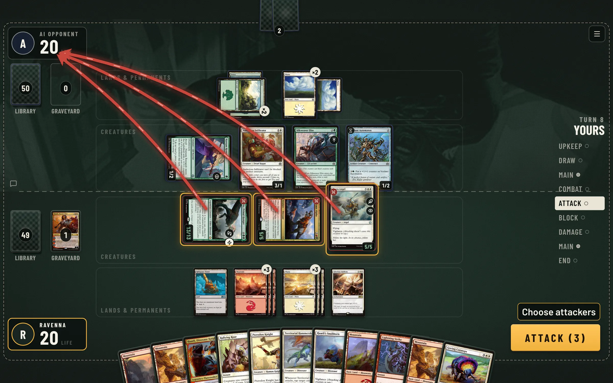
Playing
Pick a deck and press Play to start a game against the AI, or send a friend an invite link to play each other.
- Attack arrows, a visible stack and priority you can read at a glance
- Auto-pass with the stops you choose, and keyboard shortcuts
- Practice mode: a goldfish opponent and any card into your hand or onto the battlefield
- Spectating, match history and replays of finished games
- Visible keyboard focus, reduced motion respected, and no state shown by colour alone
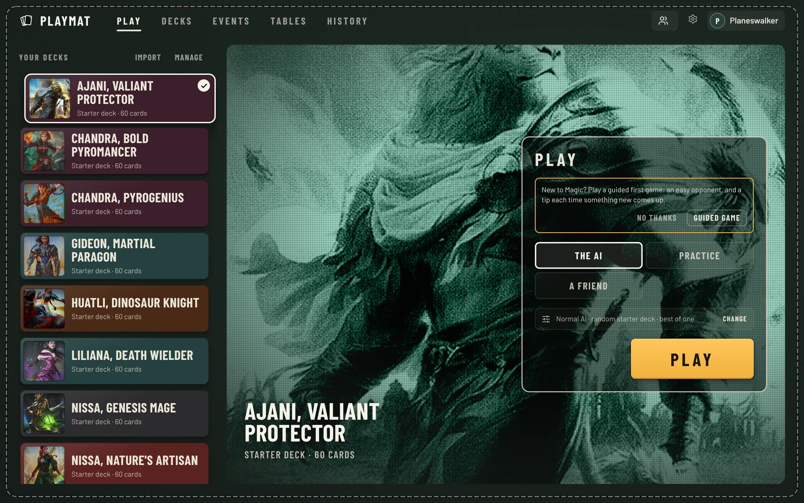
Decks
Decks come in from a link (Archidekt, Moxfield and other sites), a pasted list or a .dck file.
Every new account gets a set of starter decks, Commander ones included.
- Card search by name, type, rules text, colour, cost, rarity and set
- Format checks, a mana curve and colour counts as you build
- Booster draft, sealed, Jumpstart and constructed events, with AI players in empty seats
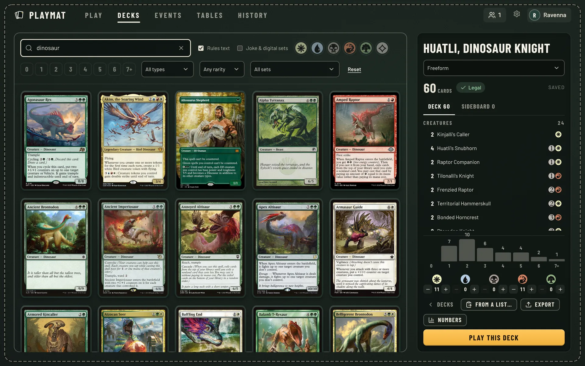
Career mode
An optional single-player mode. You start with a starter deck and a hundred coins, win games against the AI, open packs to build a collection, and work through a school for each format.
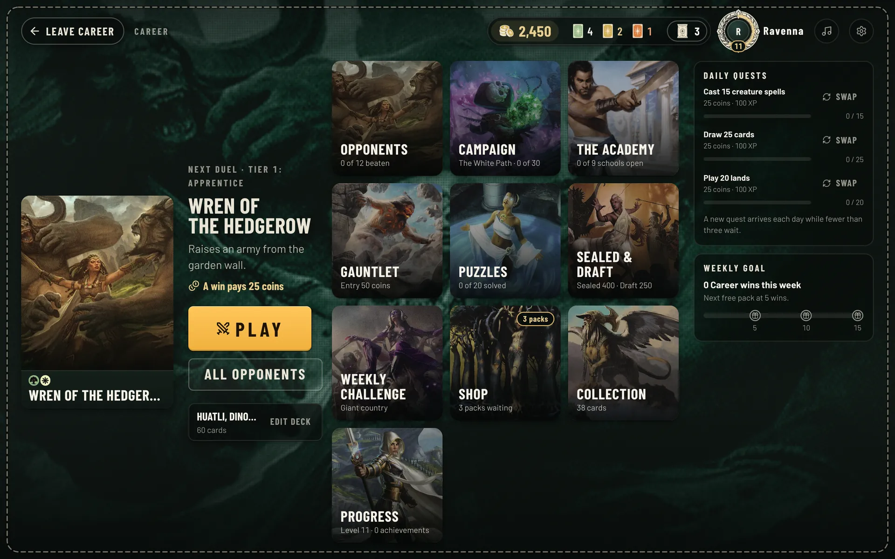
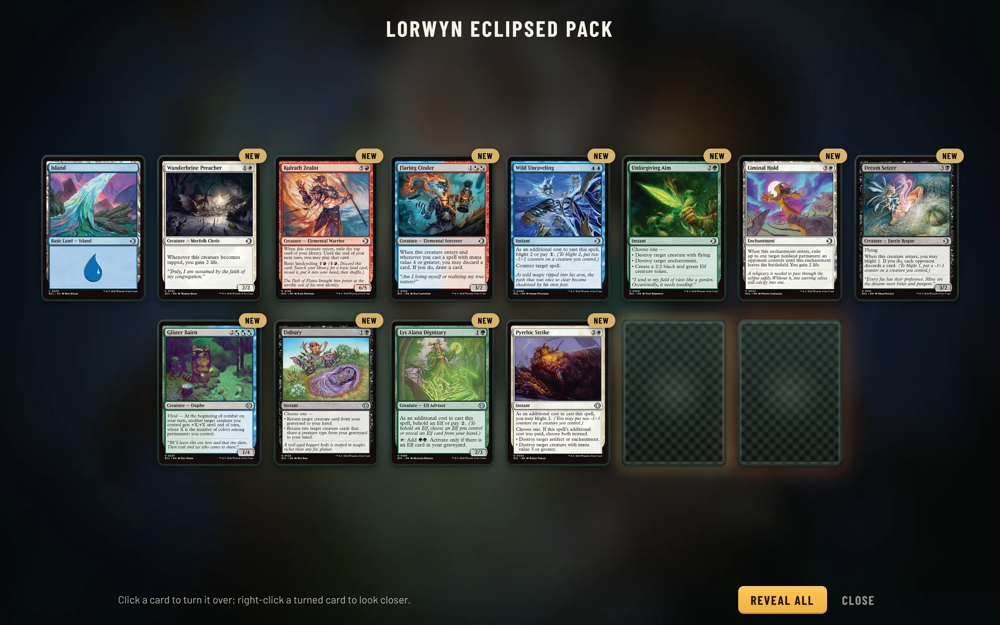
- Campaign
- Five colour paths, a boss at the end of each.
- The Academy
- A school for every format, from the rules to today's decks.
- Gauntlet
- Build from packs and climb eight bosses.
- Sealed & draft
- Open or draft a set, then play to three wins.
- Puzzles
- Win from a fixed position this turn.
- Weekly challenge
- The same decks for everyone, and a board.
The Career art (boss portraits, format crests, achievement icons and sleeves) is AI-generated for the project in one letterpress style.
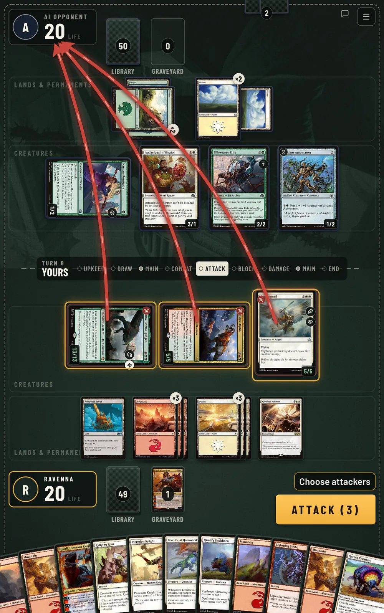
Tablets and Android
The table reflows from a wide monitor down to a tablet in portrait. It installs as a web app, and there's an Android app built from the same code that keeps card pictures on the device.
- Any modern desktop browser
- Tablets in landscape and portrait, fullscreen when installed
- Android app built from the same code
- English and Spanish
From XMage
Playmat is a new client, not a new engine. All of this comes from XMage:
- Multiplayer
- Commander, Brawl, Oathbreaker and free-for-all games for up to ten players.
- Tournaments
- Swiss or elimination events with drafting, sealed pools and sideboarding.
- Lobby
- Chat, players online, profiles and a table browser to join or watch any game.
- Rules on the server
- Rules and hidden cards are handled on the server, so a client can't cheat.
- Accounts
- Optional sign-up with passwords, ratings, moderation and admin tools for public servers.
Play on your computer
One download with everything inside, Java included. Nothing else to install and nothing to set up: open Playmat and the game opens in your browser. Play the AI and Career on your own, or have friends on the same Wi-Fi join you.
- InstallRun the installer, or drag Playmat to Applications on a Mac.
- Open PlaymatThe first start prepares the card database. That takes a few minutes, once.
- PlayThe game opens in your browser. Friends on your network join at the address Playmat shows.
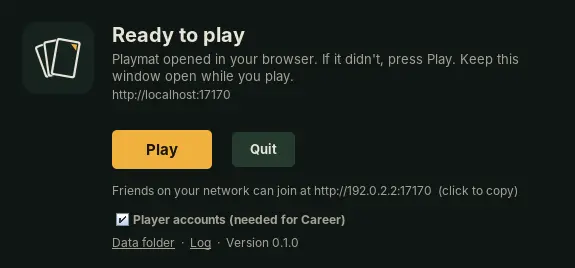
-
Windows
Download for WindowsWindows 10 or 11. Run the installer and press Install. If Windows says it protected your PC, choose More info and then Run anyway: Playmat is a free fan project without a paid signing certificate. Or skip that screen by installing from PowerShell:
irm https://github.com/arcanite24/playmat/releases/latest/download/install.ps1 | iex -
macOS
Apple silicon (M1 and later) Intel MacNot sure? Apple menu, About This Mac: "Apple M…" is Apple silicon. Drag Playmat to Applications. The first time, macOS asks you to allow it: open System Settings, Privacy & Security and choose Open Anyway. Or skip that step by installing from the Terminal:
curl -fsSL https://github.com/arcanite24/playmat/releases/latest/download/install.sh | sh -
Linux
Paste this in a terminal. It picks x64 or ARM, installs Playmat in your home folder, adds it to the applications menu and starts it.
curl -fsSL https://github.com/arcanite24/playmat/releases/latest/download/install.sh | shOr download the x64 or ARM archive and run
Playmat/playmat.
- Your accounts, decks and Career progress stay on your computer and are kept when you update.
- Playmat tells you when a new version is out.
- Card pictures come from Scryfall, so an internet connection helps.
Release notes and earlier versions are on the releases page.
Run a server
For a group that plays together from anywhere, someone runs the server with Docker Compose, on a home machine for a LAN or on one with a domain, and everyone else opens the site in a browser.
- xmage
- the game server and its WebSocket bridge
- web
- Caddy: automatic HTTPS, security headers, rate limits
- imgcache
- a caching proxy for Scryfall card pictures
- backup
- nightly dumps of the player databases
Also covered: private LAN servers with no domain, running behind another reverse proxy, Discord notifications for new tables, and capacity numbers. See the deployment guide.
# get the code
git clone https://github.com/arcanite24/playmat.git
cd playmat
# set DOMAIN, XMAGE_ADMIN_PASSWORD, XMAGE_AUTH
cp ops/web/.env.example ops/web/.env
# build and start the stack
docker compose -f ops/web/docker-compose.yml up -d --build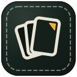
Credits
The rules engine, the card implementations and the AI are the work of the XMage project and its contributors since 2010; Playmat merges XMage regularly to pick up new sets and fixes. Card pictures and data come from Scryfall. Magic: The Gathering belongs to Wizards of the Coast.